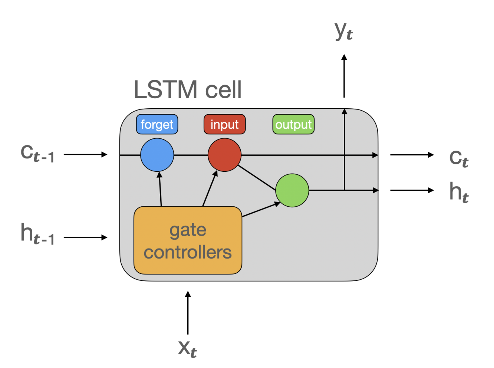

UNIVERSITE PARIS VIII - VINCENNES-SAINT-DENIS
DIRECTION DES SYSTEMES D'INFORMATION ET DU NUMERIQUE (DSIN)
Atelier IA
5. Intermediate Deep Learning with PyTorch (2)
sanghun BANG
Le 4 mars 2025
Sommaire
- Recurrent Neural Networks(RNN)
- Long Short-Term Memory (LSTM)
- Gated Recurrent Unit (GRU)
- Prochain atelier
Recurrent Neural Networks (RNN)
- Traite des données séquentielles en utilisant la sortie précédente comme en trée pour l'étape suivante
- Il combine l'entrée actuelle et l'état prédéente pour générer la sortie.
- Adapté aux données séquentielles (Langue naturel, séries temporelles)
- Problèmes de gradients lors de l'entraînement sur des séqeunces
Recurrent Neural Networks (RNN)
Architecture
Recurrent Neural Networks (RNN)
Exercice
Exercice (rnn_xor.ipynb)
Long Short-Term Memory (LSTM)
- LSTM est un type de RNN conçu pour résoudre le problème de la dépendance à long terme en utilisant un mécanisme de mémoire interne.
- Utilise un état de cellule (cell state) et trois portes : porte d'entrée, porte de sortie et porte d'oubli pour gérer l'information.
- Gestion de la dépendance à long terme
- Structure plus complexe
Long Short-Term Memory (LSTM)
Architecture

Long Short-Term Memory (LSTM)
Exercice
Exercice (lstm_mnist.ipynb)
Gated Recurrent Unit(GRU)
- Le GRU est une version simplifiée de LSTM, mais avec des performances similaires.
- Utilise seulement deux portes : porte de mise à jour (update gate) et porte de réinitialisation (reset gate).
- Efficacité : Moins de paramètres que LSTM, ce qui réduit le temps d'entraînement et les besoins en mémoire.
- Bonne performance : Offre des performances similaires à celles de LSTM tout en étant plus léger.
Gated Recurrent Unit (GRU)
Architecture
Gated Recurrent Unit(GRU)
Exercice
Exercice (gru_text_sample1.ipynb)
Comparaison
RNN,LSTM,GRU
Exercice (compare_MNIST_rnn_lstm_gru.ipynb)
Prochain atelier
- 1. Introduction to Natural Language Processing in Python
- 2. Introduction to LLMs in Python
- 3. Working with Hugging Face
- 4. Intermediate Deep Learning with PyTorch (1)
- 5. Intermediate Deep Learning with PyTorch (2)
- 6. Installation/Configuration OpenWebUI, PostgreSQL, Qdrant, Ollama
- 7. Intégration de n8n dans OpenWebUI
- 8. Deep Learning for Text with PyTorch
- 9. Building Chatbots in Python
- 10. Working with Llama 3
- 11. Transformer Models with PyTorch
- 12. Developing LLM Applications with LangChain
- 13. Retrieval Augmented Generation (RAG) with LangChain
- 14. Distributed AI Model Training in Python
- 15. Beyond LLMs: Test Time Training, Differential transformer, Titans